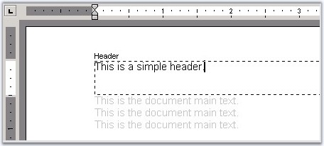
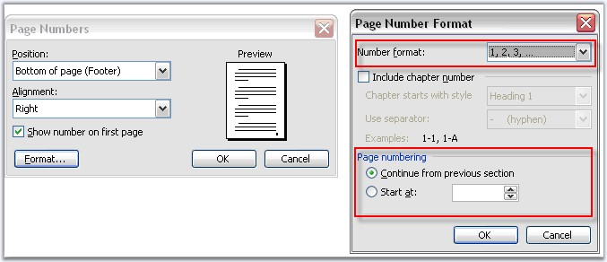

Headers and Footers are displayed at the top and bottom of the document pages respectively. Headers and Footers can include text, graphics, and nearly any other information that can be contained by a document.

Figure 35: Header added to the Document
Headers and Footers are characteristics (properties) of the document section. Each document section can have its own set of headers/footers. Each section can also have different headers on the first, odd and even pages.
You can set the header and footer by using the HeadersFooters property of the Word Document's section. HeadersFooters property returns the object of the WHeadersFooters type. To access a particular header/footer, you can use the following properties of the WHeadersFooters class.
· FirstPageHeader
· FirstPageFooter
· OddHeader
· OddFooter
· EvenHeader
· EvenFooter
The following properties return the object of the HeaderFooter type.
Public Properties
|
Name |
Description |
|
EvenFooter |
Gets even footer. |
|
EvenHeader |
Gets even header. |
|
FirstPageFooter |
Gets first page footer. |
|
FirstPageHeader |
Gets first page header. |
|
Footer |
Gets default footer. |
|
Header |
Gets default header. |
|
IsEmpty |
Detects whether all headers/footers are empty. |
|
OddFooter |
Gets odd footer ( This is also the default footer ). |
|
OddHeader |
Gets odd header ( This is also the default header ). |
|
LinkToPrevious |
Links to previous section's header and footer. |
Public Methods
|
Name |
Description |
|
GetEnumerator |
Returns an enumerator that iterates through a collection. |
HeaderFooter Class
The HeaderFooter class represents the page header or footer. It is inherited from the WTextBody, and hence can hold other paragraphs inside.
Public Properties
|
Name |
Description |
|
EntityType |
Gets the type of the entity. |
The following example illustrates how to add text to different types of headers and footers.
|
[C#]
// A new document is created WordDocument document = new WordDocument();
// Adding the first section to the document. IWSection section = document.AddSection();
// Adding a paragraph to the section. IWParagraph paragraph = section.AddParagraph();
// Setting DifferentFirstPage and DifferentOddEvenPages as true for inserting Header and Footer text. section.PageSetup.DifferentFirstPage = true; section.PageSetup.DifferentOddAndEvenPages = true;
// Appending some text to the first page in document. paragraph.AppendText( "\r\r[ First Page ] \r\rText Body_Text Body_Text Body_Text Body_Text Body_Text Body" ); paragraph.ParagraphFormat.PageBreakAfter = true;
// Appending some text to the second page in document. paragraph = section.AddParagraph(); paragraph.AppendText( "\r\r[ Second Page ] \r\rText Body_Text Body_Text Body_Text Body_Text Body_Text Body" ); paragraph.ParagraphFormat.PageBreakAfter = true;
// Appending some text to the third page in document. paragraph = section.AddParagraph(); paragraph.AppendText( "\r\r[ Third Page ] \r\rText Body_Text Body_Text Body_Text Body_Text Body_Text Body" );
// Inserting First Page Header paragraph = new WParagraph( document ); paragraph.AppendText( "[ FIRST PAGE Header ]" ); section.HeadersFooters.FirstPageHeader.Paragraphs.Add( paragraph );
// Inserting First Page Footer paragraph = new WParagraph( document ); paragraph.AppendText( "[ FIRST PAGE Footer ]" ); section.HeadersFooters.FirstPageFooter.Paragraphs.Add( paragraph );
// Inserting Odd Pages Header paragraph = new WParagraph( document ); paragraph.AppendText( "[ ODD Page Header Text goes here ]" ); section.HeadersFooters.OddHeader.Paragraphs.Add( paragraph );
// Inserting Odd Pages Footer paragraph = new WParagraph( document ); paragraph.AppendText( "[ ODD Page Footer Text goes here ]" ); section.HeadersFooters.OddFooter.Paragraphs.Add( paragraph );
// Inserting Even Pages Header paragraph = new WParagraph( document ); paragraph.AppendText( "[ EVEN Page Header Text goes here ]" ); section.HeadersFooters.EvenHeader.Paragraphs.Add( paragraph );
// Inserting Even Pages Footer paragraph = new WParagraph( document ); paragraph.AppendText( "[ EVEN Page Footer Text goes here ]" ); section.HeadersFooters.EvenFooter.Paragraphs.Add( paragraph );
// Adding the second section to the document. section = document.AddSection(); section.PageSetup.DifferentFirstPage = true;
// Appending some text to the Second Sections's first page in the document. paragraph = section.AddParagraph(); paragraph.AppendText( "\r\r[ First Page for SECOND SECTION ]\r[ ON DIFFERENT FIRTS PAGE ]\r\rText Body_Text Body_Text Body_Text Body_Text Body_Text Body" ); paragraph.ParagraphFormat.PageBreakAfter = true;
// Appending some text to the Second Sections's second page in the document. paragraph = section.AddParagraph(); paragraph.AppendText( "\r\r[ Second Page for SECOND SECTION ]\rText Body_Text Body_Text Body_Text Body_Text Body_Text Body" );
// Inserting Second Sections's First Header paragraph = new WParagraph( document ); paragraph.AppendText( "[ SECOND SECTION FIRST PAGE Header ]" ); section.HeadersFooters.FirstPageHeader.Paragraphs.Add( paragraph );
// Inserting Second Sections's First Footer paragraph = new WParagraph( document ); paragraph.AppendText( "[ SECOND SECTION FIRST PAGE Footer ]" ); section.HeadersFooters.FirstPageFooter.Paragraphs.Add( paragraph );
// Inserting Second Sections's Header paragraph = new WParagraph( document ); paragraph.AppendText( "SECOND SECTION Header Text goes here" ); section.HeadersFooters.OddHeader.Paragraphs.Add( paragraph );
// Inserting Second Sections's Footer paragraph = new WParagraph( document ); paragraph.AppendText( "SECOND SECTION Footer Text goes here" ); section.HeadersFooters.OddFooter.Paragraphs.Add( paragraph );
// Saving the document to disk. document.Save( "Sample.doc" , FormatType.Doc ); |
|
[VB.NET]
' A new document is created. Dim document As WordDocument = New WordDocument()
' Adding the first section to the document. Dim section As IWSection = document.AddSection()
' Adding a paragraph to the section. Dim paragraph As IWParagraph = section.AddParagraph()
' Setting DifferentFirstPage and DifferentOddEvenPages as true for inserting Header and Footer text. section.PageSetup.DifferentFirstPage = True section.PageSetup.DifferentOddAndEvenPages = True
' Appending some text to the first page in document. paragraph.AppendText(Constants.vbCr + Constants.vbCr & "[ First Page ] " & Constants.vbCr + Constants.vbCr & "Text Body_Text Body_Text Body_Text Body_Text Body_Text Body") paragraph.ParagraphFormat.PageBreakAfter = True
' Appending some text to the second page in document. paragraph = section.AddParagraph() paragraph.AppendText(Constants.vbCr + Constants.vbCr & "[ Second Page ] " & Constants.vbCr + Constants.vbCr & "Text Body_Text Body_Text Body_Text Body_Text Body_Text Body") paragraph.ParagraphFormat.PageBreakAfter = True
' Appending some text to the third page in document. paragraph = section.AddParagraph() paragraph.AppendText(Constants.vbCr + Constants.vbCr & "[ Third Page ] " & Constants.vbCr + Constants.vbCr & "Text Body_Text Body_Text Body_Text Body_Text Body_Text Body")
' Inserting First Page Header paragraph = New WParagraph(document) paragraph.AppendText("[ FIRST PAGE Header ]") section.HeadersFooters.FirstPageHeader.Paragraphs.Add(paragraph)
' Inserting First Page Footer paragraph = New WParagraph(document) paragraph.AppendText("[ FIRST PAGE Footer ]") section.HeadersFooters.FirstPageFooter.Paragraphs.Add(paragraph)
' Inserting Odd Pages Header paragraph = New WParagraph(document) paragraph.AppendText("[ ODD Page Header Text goes here ]") section.HeadersFooters.OddHeader.Paragraphs.Add(paragraph)
' Inserting Odd Pages Footer paragraph = New WParagraph(document) paragraph.AppendText("[ ODD Page Footer Text goes here ]") section.HeadersFooters.OddFooter.Paragraphs.Add(paragraph)
' Inserting Even Pages Header paragraph = New WParagraph(document) paragraph.AppendText("[ EVEN Page Header Text goes here ]") section.HeadersFooters.EvenHeader.Paragraphs.Add(paragraph)
' Inserting Even Pages Footer paragraph = New WParagraph(document) paragraph.AppendText("[ EVEN Page Footer Text goes here ]") section.HeadersFooters.EvenFooter.Paragraphs.Add(paragraph)
' Adding the second section to the document. section = document.AddSection() section.PageSetup.DifferentFirstPage = True
' Appending some text to the Second Sections's first page in the document. paragraph = section.AddParagraph() paragraph.AppendText(Constants.vbCr + Constants.vbCr & "[ First Page for SECOND SECTION ]" & Constants.vbCr & "[ ON DIFFERENT FIRTS PAGE ]" & Constants.vbCr + Constants.vbCr & "Text Body_Text Body_Text Body_Text Body_Text Body_Text Body") paragraph.ParagraphFormat.PageBreakAfter = True
' Appending some text to the Second Sections's second page in the document. paragraph = section.AddParagraph() paragraph.AppendText(Constants.vbCr + Constants.vbCr & "[ Second Page for SECOND SECTION ]" & Constants.vbCr & "Text Body_Text Body_Text Body_Text Body_Text Body_Text Body")
' Inserting Second Sections's First Header paragraph = New WParagraph(document) paragraph.AppendText("[ SECOND SECTION FIRST PAGE Header ]") section.HeadersFooters.FirstPageHeader.Paragraphs.Add(paragraph)
' Inserting Second Sections's First Footer paragraph = New WParagraph(document) paragraph.AppendText("[ SECOND SECTION FIRST PAGE Footer ]") section.HeadersFooters.FirstPageFooter.Paragraphs.Add(paragraph)
' Inserting Second Sections's Header paragraph = New WParagraph(document) paragraph.AppendText("SECOND SECTION Header Text goes here") section.HeadersFooters.OddHeader.Paragraphs.Add(paragraph)
' Inserting Second Sections's Footer paragraph = New WParagraph(document) paragraph.AppendText("SECOND SECTION Footer Text goes here") section.HeadersFooters.OddFooter.Paragraphs.Add(paragraph)
' Saving the document to disk. document.Save("Sample.doc", FormatType.Doc) |
DocIO provides options to link the header or footer of a section to the corresponding header or footer in the previous section by using the LinkToPrevious property. This option is available in the Header/Footer toolbar in MS Word. By default this property is set to True.
The following code illustrates how to enable this option by
using DocIO.
|
[C#]
doc.AddSection().HeadersFooters.LinkToPrevious = true; |
|
[VB.NET]
doc.AddSection().HeadersFooters.LinkToPrevious = True |
Page Number Format
You can insert page numbers of different formats such as arabic numbers, roman numbers, and so on, to the pages in the document. It is also possible to restart the page numbers from any section, and change the starting number of the page number for each section. This is equivalent to the Insert -> Page Numbers -> Format option of MS Word.
|
[C#]
section.PageSetup.PageStartingNumber = 3; section.PageSetup.RestartPageNumbering = true; sections.PageSetup.PageNumberStyle = PageNumberStyle.Arabic; |
|
[VB.NET]
section.PageSetup.PageStartingNumber = 3 section.PageSetup.RestartPageNumbering = True sections.PageSetup.PageNumberStyle = PageNumberStyle.Arabic |
The following screen shot illustrates the options provided by DocIO for setting the Page Number.

Figure 36: Page Number Settings